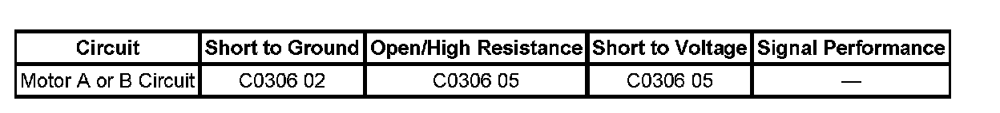

C0306
DTC C0306
Circuit Description
The transfer case motor is a bi-directional, permanent magnet, DC motor. When energized, through motor control A or motor control B, the ground is provided by the opposing motor control circuit and then grounded through the transfer case shift control module ground circuit, the motor, through a series of gears, rotates a shaft which moves the mode and range forks to shift the transfer case between the following ranges:
^ 2HI
^ 4HI
^ 4LO
^ AUTO 4WD
^ Neutral
This DTC detects an open, short to voltage, or short to ground in the motor control A or motor control B circuits, or an open, or short to ground inside the motor.
DTC Descriptor
This diagnostic procedure supports the following DTC:
DTC C0306 05
Motor A or B Circuit Short to Battery or Open
DTC C0306 02
Motor A or B Circuit Short to Ground
Diagnostic Fault Information
Perform the Diagnostic System Check - Vehicle prior to using this diagnostic procedure. Initial Inspection and Diagnostic Overview

Conditions for Running the DTC
^ The ignition is ON.
^ The system voltage is 9-18 volts.
Conditions for Setting the DTC
^ The system tests the motor circuits by checking for unwanted voltage.
^ Then, the system supplies voltage on each of the motor circuits and reads the voltage back on the other circuit.
^ If the system detects a condition with the circuits, the DTC is logged. The transfer case shift control module senses a low voltage return in the motor control A or motor control B circuits when a high voltage is expected.
^ The fault must remain current for 30 seconds to set the DTC.
Action Taken When the DTC Sets
^ All shifting is disabled.
^ The SERVICE 4WD indicator remains illuminated for the remainder of the current ignition cycle.
^ The transfer case shift control module provides a reference voltage of 4.5 volts on the motor A/B line for diagnostic purposes.
Conditions for Clearing the DTC
^ The transfer case shift control module will clear the DTC if the condition for setting the DTC is not currently present.
^ A history DTC will clear after 100 consecutive ignition cycles without a fault present.
^ History DTCs can be cleared using a scan tool.
Test Description
The numbers below refer to the step numbers on the diagnostic table.
2. This step tests the battery positive and ground circuits for poor connections.
3. This step tests the encoder motor for an internal short to ground.
4. This step helps isolate motor malfunctions from the transfer case shift control module and wiring.
5. This step tests for an open, high resistance, short to ground or short to voltage.